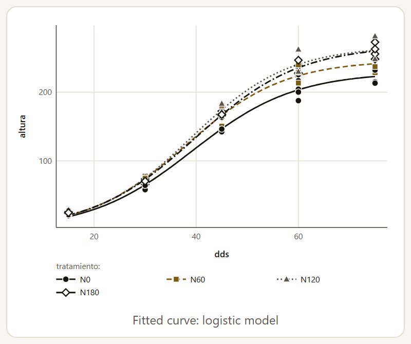
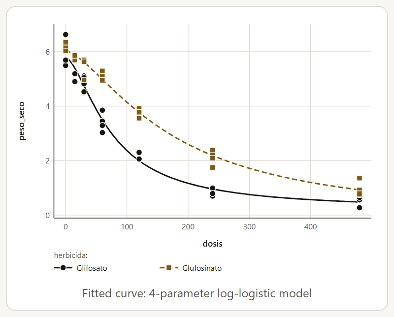
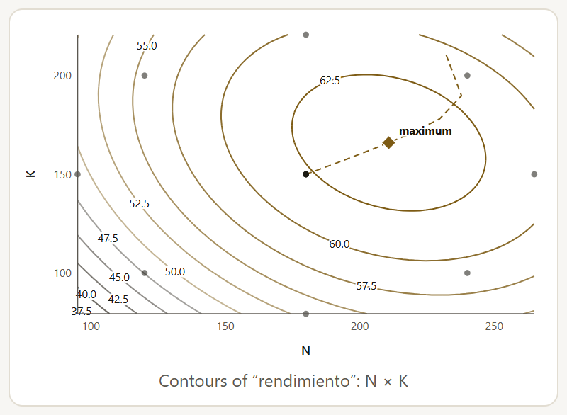
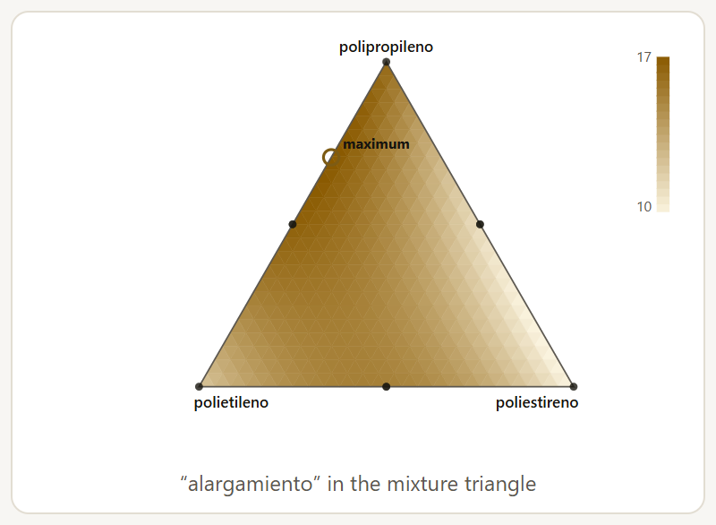
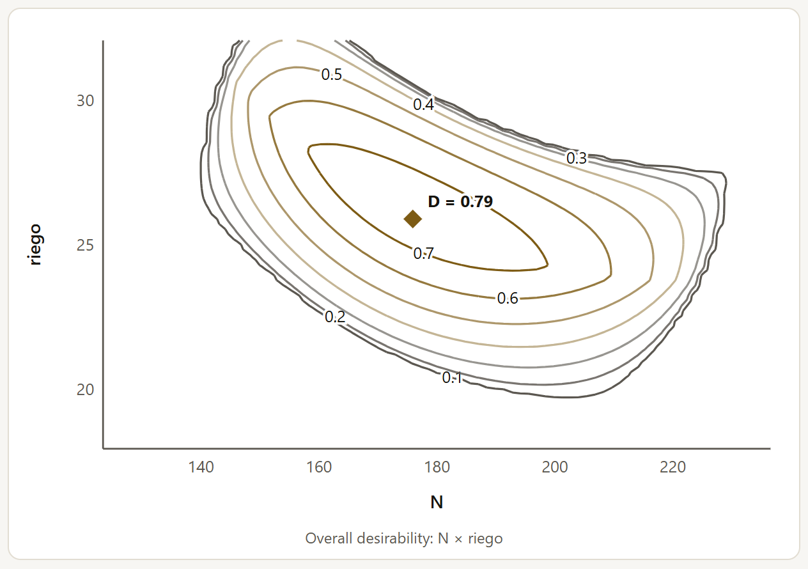
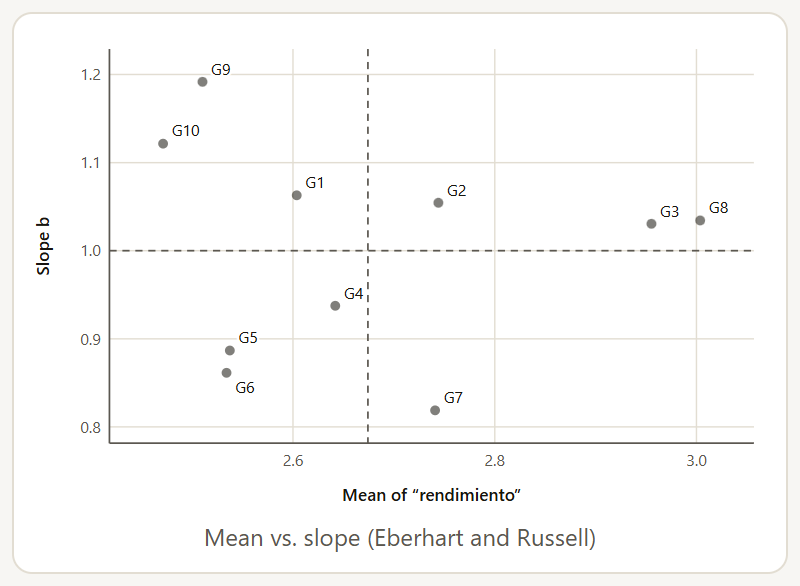
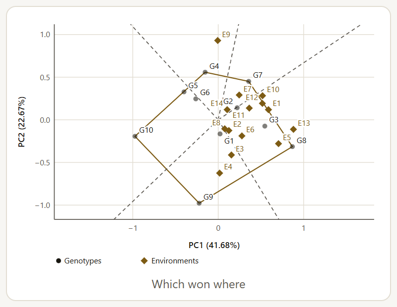

Growth that slows down as it approaches its final size, a herbicide response that falls in an S shape, or a yield that stops rising with more fertilizer are neither straight lines nor parabolas: they have parameters with biological meaning (the asymptote, the dose for 50% effect, the optimum rate) that only a nonlinear model estimates directly. The family includes three methods.
| Method | Purpose |
|---|---|
| Growth curve | Logistic, Gompertz or Weibull over time: the asymptote (the final size) and the inflection point. |
| Dose-response (log-logistic) | 4- or 3-parameter log-logistic, with the ED10, ED50 and ED90, and 5- or 4-parameter Brain-Cousens for hormesis (a stimulus at low doses). |
| Plateau response to rate | Linear-plateau, quadratic-plateau, Mitscherlich and Michaelis-Menten (with and without a response at zero rate): the optimum rate, the maximum yield and, with the prices, the economic rate. |
The three share the form: the Response variable, the Time (days, weeks) or the Dose, the Groups to compare (optional) (varieties, products), the Model, whose equation appears below it, and the confidence and significance levels. They run in the browser, by nonlinear least squares with an analytic gradient, validated against R’s nls. With groups, one curve is fitted per group, and the extra-sum-of-squares F tests whether a common curve is enough and whether each parameter can be common. The result includes the fitted curve over the data, the residuals against the fitted values and a two-row traffic light: whether the fit reached the optimum and whether any residual exceeds 3σ. The other options of the form are these:
| Option | What it does |
|---|---|
| Lowest AIC (fits all and compares), in Model | Fits all the models of the method to the same data (with the same groups and weights) and keeps the one with the lowest AIC among those that converge. The Model comparison by AIC table gives, for each one, its parameters, the AIC, the difference from the best (ΔAIC), the Akaike weight, σ and R². |
| Weights (optional) | A column with the weight of each row, for example the number of plants in a mean: the row with more weight counts more, like weights in nls. Rows with zero weight are left out; a negative weight stops the calculation. |
| Parameter intervals | Wald (estimate ± t·SE), symmetric, or Profile likelihood, which refits the other parameters at each value: they can be asymmetric and are more exact when the curve is strongly nonlinear, but they take longer. If the data do not bound a parameter on one side, that limit is shown as “—”. The linear-plateau stays with Wald: its breakpoint does not allow profiling. |
| Dose on a logarithmic scale in the plot | In dose-response and in the plateau response. The dose is drawn on a log scale, and the zero dose goes one decade below the lowest dose, with the mark “0”. It does not change the fit. |
| Product price (per unit of response) and Input price (per unit of rate) | Only in the plateau response, optional: with both, the economic optimum rate (below). |
Three models: the logistic (symmetric around its inflection point), the Gompertz (which slows down more gradually) and the Weibull (the most flexible). With maize height on five dates and one logistic curve per nitrogen rate, the model explains 99.1% of the variation and the curves differ (F = 12.40 with 9 and 68 df). With Lowest AIC (fits all and compares) the logistic also wins: the Weibull, with one more parameter per curve, is at ΔAIC = 3.73, and the Gompertz, at 41.22.

The comparison by parameter tells what changed: the asymptote (the final height) differs between rates (F = 9.46, p < 0.001), from 229.3 without nitrogen (N0) to 268.0 with N180; the inflection point (around 39 days in all four) and the scale do not differ (p = 0.414 and 0.895).
The parameter table gives each estimate with its SE, its interval and its meaning, and the residual plot completes the diagnosis.
The 4-parameter log-logistic model (upper limit d and lower limit c, slope b and the ED50 e) is the standard for herbicides, fungicides and toxicants (Seefeldt et al., 1995); the 3-parameter model fixes the lower limit at zero. The derived values are the doses for 10, 50 and 90% effect, with their SE by the delta method.

The ED50 of glyphosate is 75.13 (95% CI: 63.32 to 86.94) and that of glufosinate 174.2 (121.6 to 226.7): it takes 2.3 times more glufosinate for the same effect. The curves differ (F = 52.14), but only in the ED50 (F = 29.45); the slope and the two limits can be common (p = 0.732, 0.508 and 0.178).
The ED90 of glufosinate (752.1) falls outside the doses tested, and its interval is very wide (237.9 to 1266): extrapolating the curve costs precision.
The Brain-Cousens models (the 5-parameter one, and the 4-parameter one with the lower limit at zero) add a parameter f for hormesis: a stimulus at low doses before the decline, frequent with herbicides at sublethal doses. With f > 0 and b > 1, the derived values are the dose of maximum response, the maximum response and the ED50, which here is the dose, after the maximum, at which the response falls halfway between d and c; their SEs come from the implicit derivative, like ED and MAX in drc. In these models the parameter e is no longer the ED50, and the meaning column says so. If there is no stimulus, the conclusion points it out: in the herbicides, f comes out negative (−0.027 for glyphosate and −0.017 for glufosinate), there is no dose of maximum response, and a log-logistic is enough.
With Lowest AIC (fits all and compares), in the herbicides the 3-parameter log-logistic wins (AIC = 22.56): the 4-parameter one is at ΔAIC = 2.85, because its lower limits do not depart from zero (p = 0.318 and 0.748 in the parameter table). With it, the ED50s are 79.41 (95% CI: 70.51 to 88.32) and 166.6 (150.4 to 182.8).
With Profile likelihood, the interval of the parameter e for glufosinate (its ED50 in the log-logistic) goes from 121.6 to 226.7 (Wald) to 137.2 to 294.2: asymmetric, longer toward the high doses, where there is less information. The table of derived values keeps Wald intervals by the delta method, which are symmetric and, with poorly bounded curves, can reach negative values.
For fertilization and irrigation, five models that stop at a maximum: the linear-plateau (rises in a straight line up to the rate x0 and then stays flat), the quadratic-plateau (a parabola up to its maximum and flat afterward), and the Mitscherlich and the Michaelis-Menten, which approach their asymptote without reaching it; the Michaelis-Menten starts from zero at zero rate, and the variant Michaelis-Menten with response at zero rate also estimates that response. With the maize and one curve per hybrid, the linear-plateau explains 93.7% of the variation and the curves differ (F = 12.38 with 6 and 39 df).
| Hybrid | Optimum rate x0 | 95% CI | Plateau (t/ha) | 95% CI |
|---|---|---|---|---|
| H-40 | 102.1 | 74.15 – 130.1 | 6.250 | 6.051 – 6.449 |
| H-52 | 84.39 | 66.81 – 102.0 | 6.631 | 6.432 – 6.831 |
| H-66 | 95.83 | 75.25 – 116.4 | 7.191 | 6.992 – 7.391 |
The comparison by parameter pinpoints the difference: between hybrids, the yield without nitrogen, a, changes (F = 3.93, p = 0.028); the slope and the optimum rate can be common (p = 0.357 and 0.498). With Lowest AIC (fits all and compares) the linear-plateau wins (Akaike weight 0.75), followed by the quadratic-plateau (ΔAIC = 2.28, weight 0.24), the Mitscherlich (9.13) and the Michaelis-Menten with response at zero rate (12.23). The Michaelis-Menten without it comes last, with a negative R²: it passes through zero at zero rate, and the maize yields more than 4 t/ha without nitrogen.
The rate that gives the most yield is not always the most profitable one: each kilogram of nitrogen has a cost. With the two prices, the app calculates the economic optimum rate, where the slope of the curve equals the price ratio (the input price divided by the product price): there, the last unit of input still pays for itself with what it adds. With grain at 5000 per ton and nitrogen at 25 per kilogram, in the same currency, the ratio is 0.005: each additional kilogram must give at least 0.005 t (5 kg) of grain. It is calculated by the quadratic-plateau, the linear-plateau, the Mitscherlich and the two Michaelis-Menten models, with its SE by the delta method and the response at that rate.
| Hybrid | Optimum rate | Plateau (t/ha) | Economic rate | 95% CI | Response (t/ha) |
|---|---|---|---|---|---|
| H-40 | 147.1 | 6.246 | 120.8 | 85.74 – 155.9 | 6.180 |
| H-52 | 127.2 | 6.628 | 108.8 | 78.88 – 138.7 | 6.582 |
| H-66 | 154.0 | 7.241 | 130.1 | 98.17 – 162.1 | 7.181 |
With the quadratic-plateau, the economic rate is 18 to 26 kg/ha below the optimum and sacrifices less than 0.07 t/ha of grain. In the linear-plateau the slope is constant: as long as the input pays (here, from 0.020 to 0.026 t per kilogram, much more than 0.005), the economic rate is the start of the plateau, the same x0 as in table 4.14. If the curve starts flatter than the price ratio, the economic rate is 0 and the conclusion says that at those prices the first unit of input no longer pays for itself.
With the parabola (section 4.11), the optimum came out at 147.7 kg/ha; with the plateau, between 84 and 102. The difference is well known: the parabola forces the curve to drop after the maximum and pushes the maximum toward higher rates. When the data level off, as here between 120 and 180 kg, the plateau model usually recommends less fertilizer; the AIC comparison and the residual plot help decide which shape best describes the data.
When two or more quantitative factors act together (nitrogen and potassium, temperature and time), response surface methodology looks for the combination that gives the best response. The factors (numeric, from 2 to 6) are coded (center at 0 and a step of 1) so that the coefficients are comparable, and the app converts everything back to the original units. The family includes five methods.
| Method | Purpose |
|---|---|
| Generate a response surface or mixture design | Without data: the runs of a central composite, a Box-Behnken, a 2k factorial with center points or a simplex for mixtures, in random order and ready to open in Data. |
| Response surface (second order) | Central composite or Box-Behnken: lack of fit, stationary point, canonical analysis and ridge. |
| First order and steepest ascent | Factorial with center points: the curvature and the path toward the best response. |
| Mixtures (Scheffé models) | Components that add up to the same total (substrates, rations, formulations): the best mixture. |
| Desirability of several responses | Several responses at once (high yield, low cost, a quality at a certain value): the most desirable combination. |
All of them run in the browser; the models are validated against R’s lm and eigen, and the designs, against their construction in R.
The generator needs no data. Choose the Design (Central composite, Box-Behnken, 2^k factorial with center points, Simplex-lattice (mixtures) or Simplex-centroid (mixtures)), the number of Factors or Components (from 2 to 6; from 3 to 5 in the Box-Behnken) and the Center points or the Centroid replicates (empty: the design’s defaults). In the central composite, α sets the distance of the axial points: Rotatable (α = F^¼), with the same precision at the same distance from the center; Orthogonal; Face-centered (α = 1), with only three levels per factor; or Two orthogonal blocks, with the factorial and axial parts on different days or batches. From five factors on, it uses the half fraction of the factorial. In the simplex-lattice you also choose the Lattice degree (2, 3 or 4).
| Design | Runs | How they are formed |
|---|---|---|
| Rotatable central composite | 20 | 8 factorial, 6 axial with α = 1.6818 and 6 center points |
| Orthogonal central composite | 20 | The same, with α = 1.5246 |
| Face-centered central composite | 20 | The same, with α = 1 |
| Central composite in two orthogonal blocks | 20 | The same, with α = 1.8091 and in two blocks |
| Box-Behnken | 15 | 3 at the center; each factor at −1, 0 and +1 |
| 23 factorial with center points | 12 | 8 factorial and 4 center points: for the first order and the curvature |
| Simplex-lattice of degree 2 | 6 | The vertices and the midpoints of the edges |
| Simplex-lattice of degree 3 | 10 | The mixtures in thirds, one of them at the centroid |
| Simplex-centroid | 7 | The vertices, the midpoints of the edges and the centroid |
The conclusion says how many coefficients the second-order model has (or the Scheffé quadratic, in mixtures) and how many degrees of freedom remain for the error; if none remain, it asks you to add center points in surface designs and to replicate some mixtures (for example the centroid) in mixture designs, such as the simplex-lattice of degree 2 with three components: 6 mixtures for 6 coefficients.
With the Factor names (optional), the Low level (−1) of each factor (optional) and the High level (+1) of each factor (optional), separated by commas, the Design runs table gives each run coded and in original units; if an axial point falls at a negative level, the conclusion warns about it. In mixtures, the Mixture total (1 for proportions, 100 for percentages, or the total mass) converts the proportions into amounts. With a Seed for the random order (optional), the Run column gives the random field order, within each block, and the Standard column, the design order; the same seed always gives the same order. For example, a rotatable central composite with two factors, with the names “N, K”, the low levels “120, 100” and the high levels “240, 200”, has 13 runs (4 factorial, 4 axial with α = 1.4142 and 5 center points), with the axial points at N = 95.15 and 264.85 and at K = 79.29 and 220.71: the design of the tomato example.
The Open the design in Data (with a column for the response) button takes the runs to a new worksheet (chapter 2) with the columns “corrida” and “estandar”, the block (if there are two), the factors (in original units if the levels or the total were given; otherwise, coded) and an empty “respuesta” column to record the result of each run. The plot shows the runs on the first two coded factors or, in a three-component mixture, in the triangle.
For central composite or Box-Behnken designs. Choose the response, the Design factors (numeric, 2 to 6), the Blocks (optional), the Model (Second order (with quadratic terms) or First order with interactions) and, in Find, Maximum response or Minimum response. With the tomato in a central composite of nitrogen and potassium, the model explains 97.5% of the variation and there is no lack of fit (F = 0.04 with 3 and 4 df, p = 0.989).

The stationary point is a maximum at N = 210.8 and K = 166.0, with an estimated yield of 63.75 (95% CI: 62.61 to 64.89). It lies within the experimental region: 0.61 coded units from the center, while the data reach 1.42.
The canonical analysis confirms it: the two eigenvalues are negative (−2.360 and −4.086); with different signs it would be a saddle point, and one near zero would indicate a ridge, a line of almost equally good combinations.
The tables are the ANOVA by groups of terms (with the lack of fit and the pure error), the coefficients coded and in original units, the coding, the stationary point, the canonical analysis and the ridge: the best combination at each distance from the center, useful if the optimum falls outside the region or is a saddle point. The plots are the contour plots of each pair of factors (up to six pairs), the 3D surface of the first two factors, the response along the ridge with its confidence band, and the residuals. The Rotate the 3D surface: buttons (⟲, ⟳, ↑ and ↓) turn it sideways and show it from higher up or lower down. With more than two factors, those that are not in a plot are held at the stationary point if it is inside the region or, if not, at the center.
The Factor coding is, by default, From the design (center and step of its levels): with five symmetric levels (central composite), the step goes from the center to the factorial point and the axial points lie at ±α. With Manual: the −1 and +1 levels of each factor, two fields per factor appear (N: level −1, N: level +1…) to use another coding, for example that of the trial protocol. The predictions, the stationary point and the ridge in original units do not change; the coded coefficients and the distances do. In the tomato, with N from 100 (−1) to 260 (+1), the coefficient of N goes from 4.243 to 5.657 and the stationary point lies 0.50 units from the center instead of 0.61, but it remains at N = 210.8 and K = 166.0, with 63.75.
The traffic light has three rows: the lack of fit (gray if there are no replicated points), the residuals beyond 3σ and the stationary point, in amber if it is a saddle point or falls outside the region. That last row does not compare the type of point with what you are looking for: with Minimum response, the tomato maximum leaves it green. What matters then is in the conclusion, which searches along the ridge: the lowest estimated response is 45.66, with N = 102.1 and K = 112.4.
Far from the optimum, a factorial with center points and a first-order model are enough: the path of steepest ascent tells you which way to move. With the tomato, the flat model has lack of fit (F = 11.32, p = 0.017): the response curves, and the app advises moving to the second order. The path rises 51.53 kg of N and 25.62 of K per coded unit; its table gives the combinations and the predicted response.
In a mixture, the proportions matter, not the amounts: if one component goes up, another goes down. Scheffé models have no intercept and are fitted on the proportions: each row is divided by its sum, so proportions, percentages or amounts all work, as long as every row adds up to the same total (if not, the app warns about it). Choose the response, the Mixture components (2 to 6; each row sums to the same total), the Scheffé model (Linear (each component alone), Quadratic (with binary blends) or Special cubic (with ternary blends)) and, in Find, Mixture with the highest response or Mixture with the lowest response.

With Cornell’s (2002) yarn elongation, a simplex-lattice of polyethylene, polystyrene and polypropylene with replicates, the quadratic model explains 95.1% of the variation. The coefficient of each component is the response of the pure component (11.7, 9.4 and 16.4), and that of each pair, how far the blend departs from the sum of its parts: polyethylene with polystyrene (β = 19.0, p < 0.001) and with polypropylene (β = 11.4, p = 0.002) are synergies; polystyrene with polypropylene, an antagonism (β = −9.6, p = 0.005).
The best mixture of the model, searched over the whole triangle, has 29.4% polyethylene and 70.6% polypropylene, without polystyrene: an estimated elongation of 17.38 (95% CI: 16.36 to 18.41), more than any pure component.
The ANOVA tests the model against the mean (the proportions add up to 1, so the mean is already in the model) and the lack of fit against the pure error of the replicated mixtures. In the yarn, the quadratic has as many coefficients as distinct mixtures (6), and that row of the traffic light stays gray: there is nothing to test it with. The linear model does show lack of fit (F = 32.32 with 3 and 9 df, p < 0.001) and explains only 42.7%. The special cubic cannot be estimated with this design: the app says “The mixtures do not allow the special cubic model to be estimated” and explains that it needs the centroid of each three-component face. Besides the triangle (with three components), the Cox trace moves each component from 0 to 1 starting at the centroid and divides the rest equally among the others: the slope of each line tells how much weight that component carries. The method has no residual plot.
A single response is rarely all that matters: you want high yield, low cost and a quality at a certain value. Derringer and Suich’s desirability fits each response with its own second-order model (with the same design and the same coding), converts each prediction into a d between 0 (unacceptable) and 1 (what is sought) and combines them into an overall desirability D, their geometric mean: a single response outside its limits is enough for D to be 0. The combination with the highest D is sought with the Nelder-Mead method from each design point and from the center.
Choose the Design factors (numeric, 2 to 6) and the Responses to combine (1 to 6). Each response has its own box: Find (Highest, Lowest or A target value), the Lower limit and the Upper limit (with the Target value between them, if you look for a value), the Exponent (1: linear; greater than 1 requires getting closer to the target; with a target value, the Exponent (above the target) governs the other side) and the Importance, which weights the response in the geometric mean. When you select a response, it looks for the highest value, with the limits at its minimum and maximum: you have to adjust them to what you require of each one. The Search region is The cube of the design levels or The design sphere (rotatable central composite).

In the fruit example (a central composite of nitrogen and irrigation depth), with the highest yield between 70 and 86, the lowest cost between 11 and 15 and a pH target of 6.5 between 6 and 7, the most desirable combination is N = 175.9 and riego = 25.89, with D = 0.786. There the estimated yield is 79.50 (d = 0.593), the cost 11.72 (d = 0.819) and the pH 6.500 (d = 1.000). With the sphere, the same point comes out, because it lies close to the center.
The tables give the combination (coded and original), each response at that point with its d and the R² of its model (0.995, 0.992 and 0.976), and the D of each run, with the predicted responses: the eight runs on the edge get D = 0, because some response falls outside its limits, and the five at the center, 0.743.
The method has no traffic light: if the model of any response has an R² below 0.7, the conclusion warns that its prediction, and with it the desirability, is not very reliable.
The same genotypes evaluated at several locations or in several years respond differently to each environment: this is the genotype × environment interaction (G × E). The five methods of the family measure it, describe it and help choose genotypes that are stable or adapted to each region.
| Method | Purpose |
|---|---|
| Combined analysis of several environments | The combined ANOVA with the G × E interaction, the analysis of each environment and the homogeneity of their errors. |
| Two-stage analysis (one variance per environment) | The adjusted means of each environment and the weighted combined analysis: for errors that differ between environments or genotypes that are missing. |
| Stability | The regression on the environmental index and six more measures: Wricke, Shukla, Lin and Binns, Huehn, Kang and Annicchiarico. |
| AMMI | The interaction axes with their tests, the ASV, the WAAS and the AMMI1 and AMMI2 biplots. |
| GGE biplot | Which won where, mean vs. stability, the ideal genotype and environment and the comparison of two genotypes. |
All of them ask for the Response variable, the Genotypes (varieties, hybrids, lines), the Environments (locations, years, dates) and, if there are any, the Replicates or blocks (optional); without them (— one mean per cell —), each row is the mean of one genotype in one environment. They also ask whether Best is The highest response or The lowest response, and the significance level. At least 3 genotypes and 3 environments are needed (2 in the GGE). They run in the browser and were validated against R’s lm and svd. At the foot of the combined analysis and the stability, the “Continue in the LABG suite” strip suggests ClusteringPro, to group genotypes or environments; at the foot of the AMMI and the GGE, PCAPro as well (chapter 10).
Except for the two-stage analysis, the methods need the complete genotype × environment table. The Impute empty genotype × environment cells (EM-AMMI) checkbox, checked by default, fills each empty cell with the additive model plus the interaction axes requested in Imputation axes (from 0, additive effects only, to 3; 1 by default) and repeats until the value stops changing. If G2 were missing in E5 and G7 in E12 in the oats, 4.173 and 1.660 would be imputed in 31 iterations: the conclusion and the Cells imputed by EM-AMMI table list them, the interaction loses one degree of freedom per cell (115 instead of 117), and the traffic light marks it in amber (in red if more than 10% of the cells are imputed). Without the checkbox, the app stops and says which combinations are missing.
With the oats of Olivoto and Lúcio (2020), 10 genotypes in 14 environments with three replicates, the combined ANOVA finds the interaction (F = 2.76, p < 0.001): the ranking of the genotypes changes between environments. The genotypes are tested in two ways: against the error (F = 14.93) and against the interaction, as is appropriate if the environments are a sample of many possible ones (F = 5.41, the same as in the mixed model of section 4.15). G8 has the highest overall mean (3.004).
The method also analyzes each environment separately (mean, MSE, CV and the genotype F) and checks the homogeneity of the errors: in the oats, the largest MSE is 6.71 times the smallest (Bartlett p < 0.001), so the tests of the combined analysis are approximate, and the traffic light says so. With 12 genotypes or fewer, the Each genotype across environments plot joins the means of each genotype in the environments ordered from the lowest to the highest mean: the lines that cross are the interaction.
When the errors of the environments differ as much as in the oats, or genotypes are missing in some environments, the two-stage analysis is the better choice. In the first stage, each environment is analyzed on its own and gives the adjusted mean of each genotype with its variance; in the second, those means are combined by generalized least squares, each weighted according to its precision, and the interaction variance is estimated by REML. It does not impute: it uses the means that exist. Each environment needs its own error, so replicates or several plots per genotype are required.
In the oats, the genotypes differ (Wald: F = 5.99 with 9 and 117 df, p < 0.001), G8 has the highest adjusted mean (3.016 ± 0.07732), and the interaction variance, now without the error of each environment, is 0.05407. The traffic light row for the errors shows in amber (maximum/minimum ratio of 6.71): this is exactly the case the method is meant for. The tables are the first stage (mean, MSE, CV and genotypes of each environment), the adjusted means next to the simple mean, and the test of the genotypes; the plot gives each adjusted mean with its 95% interval. When there are replicates, the assistant (section 4.2) includes it among the next steps of any analysis in this family.
There are several ways to measure it. The regression on the environmental index (Finlay and Wilkinson; Eberhart and Russell) gives each genotype a slope b (1: it responds like the average; greater: it takes advantage of good environments; smaller: it is adapted to poor ones) and a variance of the deviations S²d (0: its response is predictable). Wricke’s ecovalence and Shukla’s variance tell how much each genotype contributes to the interaction, and Lin and Binns’ superiority (Pi) how far it is from the best genotype in each environment. Huehn’s nonparametric statistics work with ranks: S1 and S2 measure how much each genotype changes place between environments (with their Z test), and S3 and S6 combine response and stability. Kang’s YS gives each genotype points for its yield rank, subtracts points for its Shukla variance and selects those above the average; it needs replicates. Annicchiarico’s reliability index (Wi) expresses the response as a % of the mean of each environment and penalizes instability (Wi = mean − z·SD), across all environments, in the favorable ones and in the unfavorable ones; it is calculated only when the best is the highest response.
The options are the Standard error of b, From each genotype's regression or From the pooled error of the environments, and the Risk level of the Annicchiarico index (0.25, 0.10 or 0.05): a lower risk penalizes instability more.

| G8 | G3 | G10 | |
|---|---|---|---|
| Mean | 3.004 | 2.955 | 2.471 |
| b | 1.034 | 1.031 | 1.122 |
| p of S²d = 0 | 0.013 | 0.840 | < 0.001 |
| Wricke (% of G × E) | 8.23 | 2.32 | 25.48 |
| Lin and Binns Pi | 0.04117 | 0.04099 | 0.3437 |
| Huehn S1 | 2.97 | 2.70 | 4.57 |
| Kang YS | 5 | 12 | −9 |
| Annicchiarico Wi (%) | 107.41 | 107.98 | 77.54 |
| ASV (AMMI) | 0.574 | 0.113 | 1.225 |
| WAAS (AMMI) | 0.327 | 0.106 | 0.652 |
G8 has the highest mean but significant deviations (S²d > 0): it yields a lot, though not always what is expected. G3, almost as productive, meets b = 1 and S²d = 0, is the most stable by Wricke and the best by Lin and Binns: the ideal genotype of Eberhart and Russell. The other measures agree: G3 is the one that changes place least between environments (Huehn), the one with the highest Kang YS and the one with the highest Annicchiarico Wi, just above G8. Kang selects seven genotypes (G1 to G6 and G8). G10, the one with the lowest mean, is also the one that contributes most to the interaction. This result does not repeat the combined ANOVA: whether there is interaction is seen in the combined analysis.
The GGE biplot combines the genotype effect and its interaction (G + G × E), which is what matters for choosing. Choose the Table (Environment-centered or Centered and divided by the standard deviation of each environment) and the Singular value partitioning: Symmetric, Genotype-focused (to compare genotypes) or Environment-focused (to compare environments). In the oats, the first two axes explain 64.34% of G + G × E.

In which won where, the polygon joins the genotypes farthest from the origin, and the rays divide the plane into sectors. In the oats there are 4 sectors, which the conclusion calls “possible mega-environments”: G8 wins in nine environments, G9 in E3 and E4, G7 in E7 and E14, and G4 in E9. With data from a single season they are no more than that: to declare them mega-environments, the pattern has to repeat across years (Yan et al., 2000).
The second plot, mean vs. stability, orders the genotypes along the average-environment axis: G8 has the best performance and, among the top three, G3 is the most stable.
Two more plots place an ideal genotype (high and stable) and an ideal environment (one that discriminates strongly among genotypes and represents the others) on the average-environment axis, with distance rings, and their tables rank genotypes and environments by their distance to them. In the oats, the genotype closest to the ideal is G8 and the environment, E13, with any of the three partitionings (the table notes recommend the genotype-focused partitioning for the first and the environment-focused one for the second). With Compare two genotypes (optional) and … with, a plot draws the line that joins them and the perpendicular that divides the environments, and a table compares, in each environment, the difference predicted by the biplot with the observed one: G8 outperforms G3 in 13 of the 14 environments according to the biplot (all but E9), but in only 9 according to the means. The biplot summarizes two axes; fine decisions are made with the data.
The additive main effects and multiplicative interaction model decomposes the interaction into axes (principal components of the table of interactions). The app tests each axis with Gollob’s F and, with Cornelius’s FR, the interaction that remains after n axes, which is more reliable: in the oats, Cornelius retains 3 axes and Gollob 4; the first two explain 66.22% of the interaction. The tables give the genotype and environment scores and Purchase’s ASV (lower, more stable: G3, with 0.11), and the plots are the AMMI1 (mean against axis 1) and AMMI2 (axis 1 against axis 2) biplots.
The WAAS averages the absolute scores of each genotype over several axes, weighted by the % of the interaction of each axis (lower, more stable), and the WAASY combines it with the response, both rescaled from 0 (the worst) to 100 (the best). The options are the WAAS axes (The significant ones (Gollob's F), or from 1 to 5) and the Response weight in the WAASY (%) (0: stability only; 100: response only; 50 by default). In the oats, with the 4 significant axes, G3 is the most stable (WAAS = 0.106) and the best by WAASY (95.46), followed by G8 (79.81). The Response vs. stability (WAAS) plot crosses the overall mean with the mean WAAS: the lower right quadrant brings together high response and stability.
The AMMI conclusion counts the axes that are significant by Gollob consecutively from the first one; the WAAS counts all the axes with a p below the significance level and uses that number of axes, starting from the first (without replicates there is no error to test them, and it uses all of them). If a non-significant axis fell between two significant ones, the two numbers would differ; in the oats they agree (4). To set another number, choose the axes in WAAS axes.